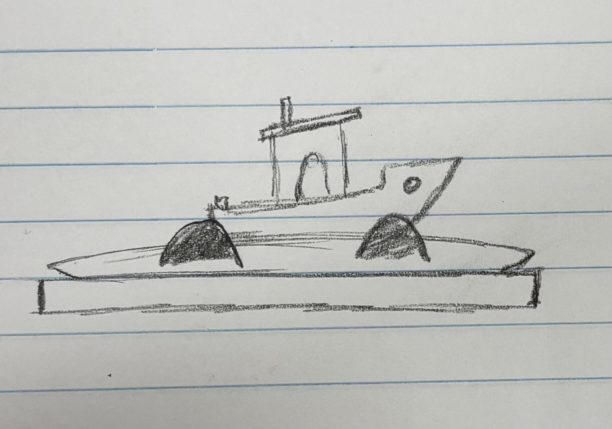
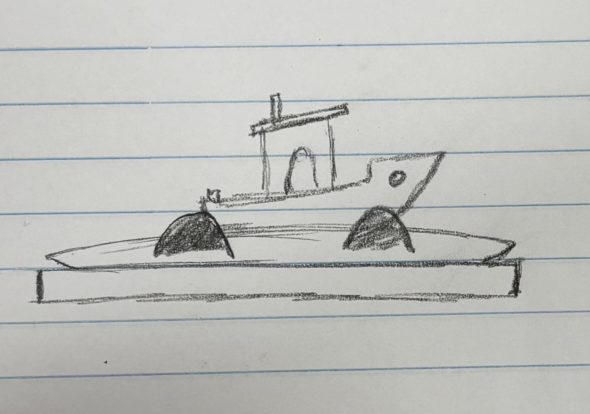

Project 1
First Print: Name Tag

After seeing the result of the name tag I think the overall process went smoothly for my first print. I did run into a few errors and minor problems during the printing mostly because I was unfamiliar with the software and machines. So first I downloaded the file for the name tag, then I opened the file in Prusa Slicer. But when it loaded it was inverted, I wasn’t sure why it happened but I just had to restart the process and it was fine after. The length of the name tag was 73mm, the width was 20mm, and the height was 3mm. After finalizing my CAD I sliced it which turned it to a CAM. I transferred the file into a USB and plugged it into a 3D printer.

Before printing the name tag I noticed that the previous filament was not going to be enough. So I had to change the filament. I had to go to “replace filament” on the 3D printer and it will push filament out so I can put a new one in. A tip I learned on the way was to cut the new filament so it has a point on the tip before I put it in. After that it will automatically push the filament into the filament sensor, but I noticed that it didn’t push it all the way through the Extruder-Print head PTFE tube so I had keep telling the printer to continue pushing filament until it started to coming out of the nozzle.

While printing, I saw in the direction that we had to change the color of the filament half way into the print. I thought that we had to manually pause the printer at 50% but it would automatically stop to tell me to change the filament so I changed it twice during this print. You can see the photo of the name tag, it has a layer of gold in the middle.
In total it took around 13 mins and it used around 4g of filament. Some trouble shooting I noticed were a little layer separation on the top right corner, it sort of melted into the print and there were a few gaps in the infill lines and gaps in the lettering. The only gaps that should be in the letters were at the bottom of the letter a, but there were gaps in the B, N, D, O, Z, and H. Overall, The most challenging physically was changing the filament and making sure it got to the nozzle. Also using the software took some time to get used too and learn how to use it.
Settings:

- 0.20mm speed
- Prusament PLA
- Original Prusa MINI & MINI + Input Shaper
- Infill: 15%
- Scale: 100%
- Nozzle temp: 170°C
- Bed temp: 60°C


 
